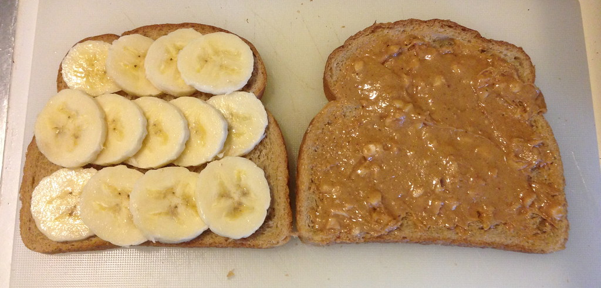

Home
Tek's Peanut Butter and Banana Sandwich

Description:
My mom also made this for me and its actually so good. Family recipe btw.. shouldn't be spilling this but I will for you guys.
Ingredients:
- bread (your choice but wheat bread goes hard)
- peanut butter
- banana
Steps (EASY THREE STEP PROCESS!):
- Gather all ingredients.
- Get two breads and peanut butter the faces
- Chop the banana in to discs about a centimeter thick and layer them inbetween the breads
Enjoy!